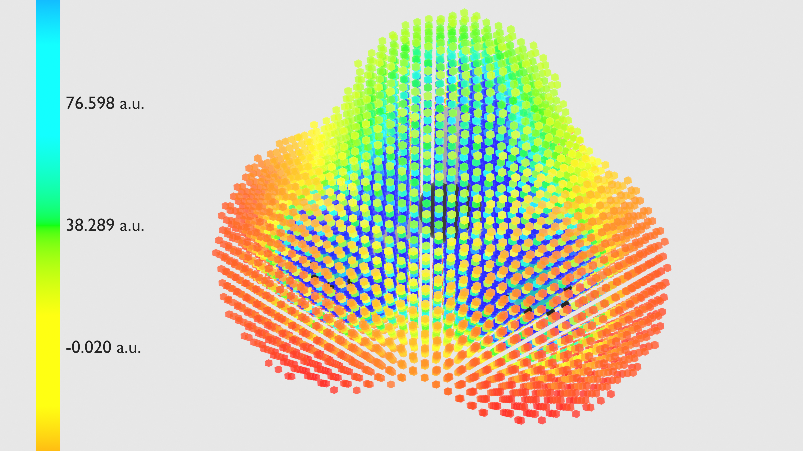
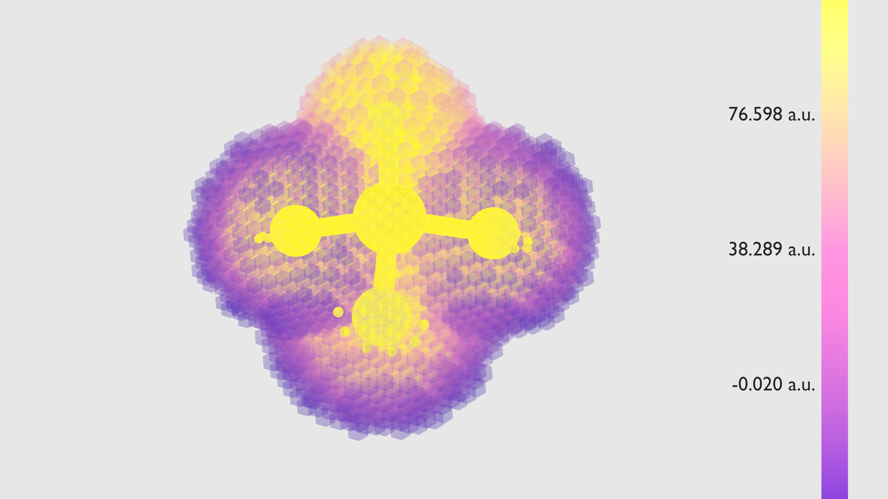

In educational psychology, Sweller’s cognitive load theory and Paivio’s dual-coding theory state that learning is heavily hindered when students must mentally integrate disjointed visual and abstract information (the split-attention effect).
When a student watches a traditional lecture, they must look at a 2D molecule, mentally rotate it in 3D, read a separate energy graph on another slide, and infer motion from a static arrow—all at once.
Chemorphis animations eliminate cognitive friction by unifying these channels into a single, synchronised visual feed.
We at Chemorphis are chemists first and animators second. Every concept is securely rooted in core science.
Built for your brand. Designed for your platform.
We never force generic styles onto your curriculum. Every asset is built from scratch to integrate into your visual brand identity. Colour palettes, typography, UI, and every fine detail can be controlled.


* Extra features and distinct visual styles can be developed upon request.